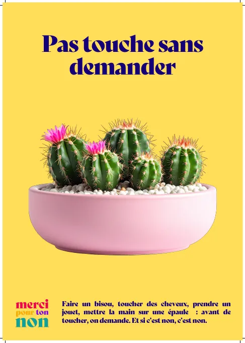

PDF · A3 · 5 pages
série de 5 affiches
« Pas touche sans demander », « Si tu fais l'anguille, c'est que c'est non ! », « Recevoir un "non" est un cadeau », « On peut changer de disque ! » et « Dire "non" n'est pas une trahison ». Cinq affiches au format A3, pensées pour être imprimées et affichées.
Télécharger les affiches (s’ouvre dans un nouvel onglet)S'ouvre dans un nouvel onglet, sur kDrive (Infomaniak).